前言
用过 Android Studio 进行开发的人一般都使用过插件，因为使用插件可以大大提高我们的开发效率。例如我们常用的插件有：
- GsonFormat：将 json 数据转换成实体类。
- Android Butterknife Zelezny：一键生成 ButterKnife 注解。
都知道插件很好用，那这些插件是怎么制作的呢？这篇文章就讲下怎么制作一个 Android Studio 插件。
一、准备工作
- 首先需要下载开发工具 IntelliJ IDEA，点击下载。
- 下载后点击安装，安装成功打开界面是这样的：
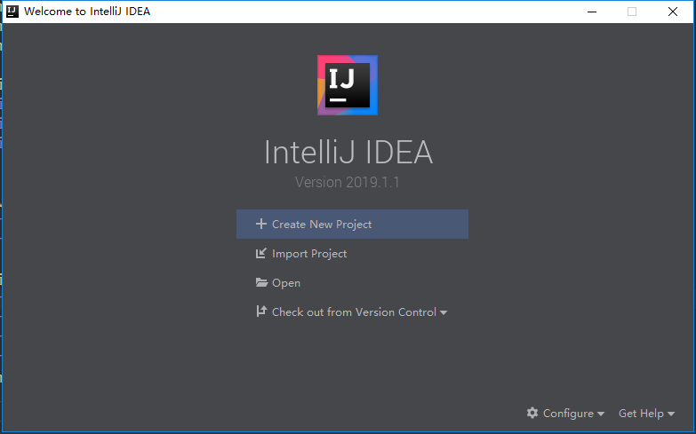
- 点击 Create New Project 创建一个新的项目，因为是开发插件，所以这里选择 IntelliJ Platform Plugin，然后选择项目的 SDK，点击到 “Next” 下一步。具体如下图所示：
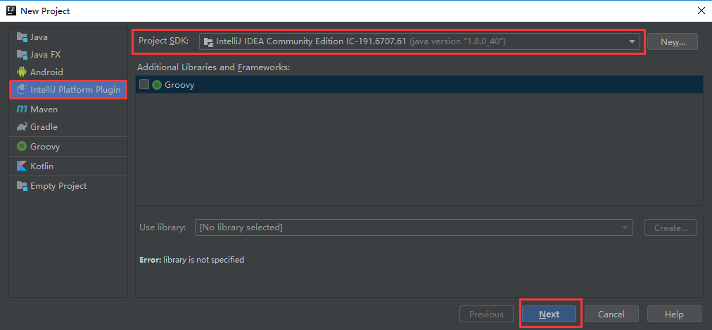
- 最后填写项目名称，选择项目的存储路径，点击 “Finish” 即可。具体如下图所示：
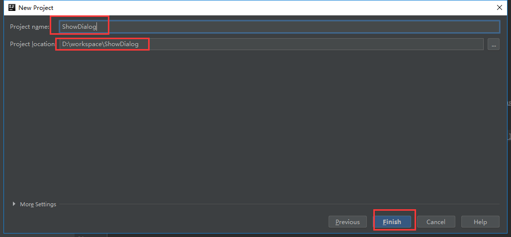
- 创建完成项目的结构如下图所示：

其中 plugin.xml 为插件的一些相关信息，src 用来存放编写的代码。
二、编写插件
2.1 填写插件相关信息
插件相关信息需要在 plugin.xml 文件中填写，具体如下图所示：
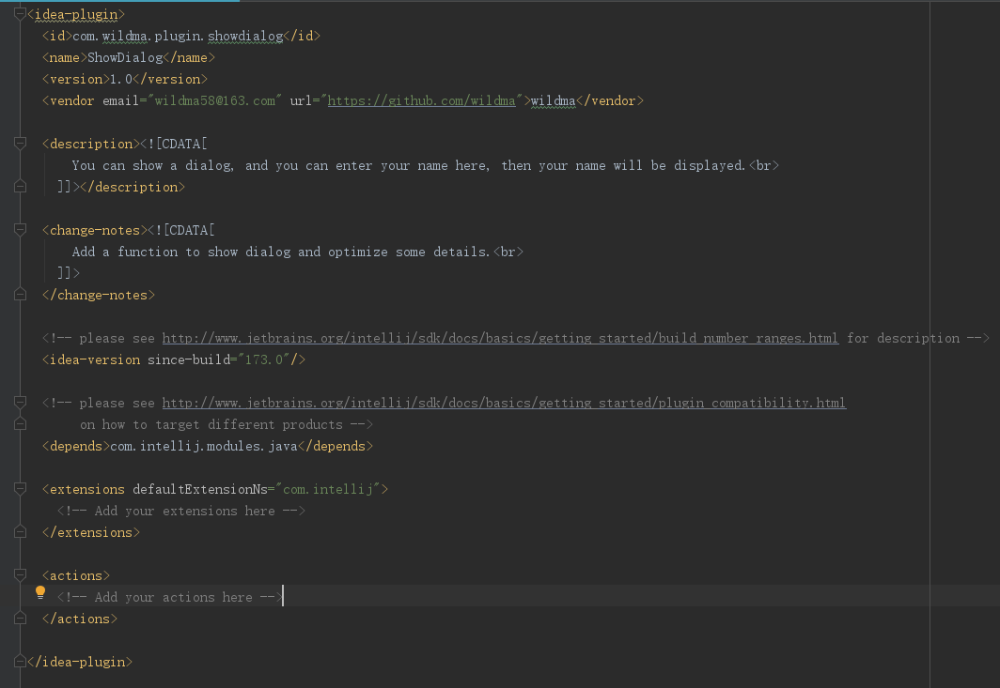
每个标签的意思为：
- id：插件 id，需要唯一值
- name：插件名称
- version：插件版本号
- vendor：插件作者信息
- description：插件描述
- change-notes：插件版本更新日志
- idea-version：对 IntelliJ IDEA 软件支持本插件版本号，默认即可
- depends：指定你的插件是哪些 IDE 可以使用。
例如我这里的表示 IntelliJ IDEA 与 Android Studio 可以使用，如果只想在 Android Studio 使用，则写成com.intellij.modules.androidstudio ，具体写法可参考 Plugin Compatibility with IntelliJ Platform Products - extensions：扩展，用不到可以不改
- actions：插件动作，后面创建 Action 的时候会自动配置
这些信息会在搜索该插件的时候展示，例如搜索 GsonFormat ：
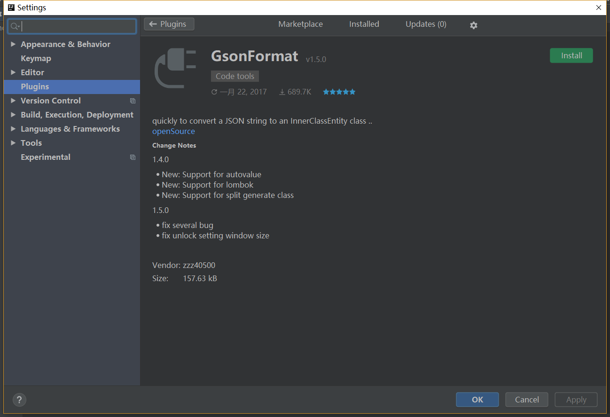
2.2 新建 Action
不能直接在 src 文件夹下新建 Action（原因见文末注意事项），包括后面我们插件的功能代码也不能直接放在 src 文件夹下，而是在 src 文件夹下新建一个包（方法与 Android Studio 一样），然后在这个包下新建 Action。即在包上右键点击如下选项：
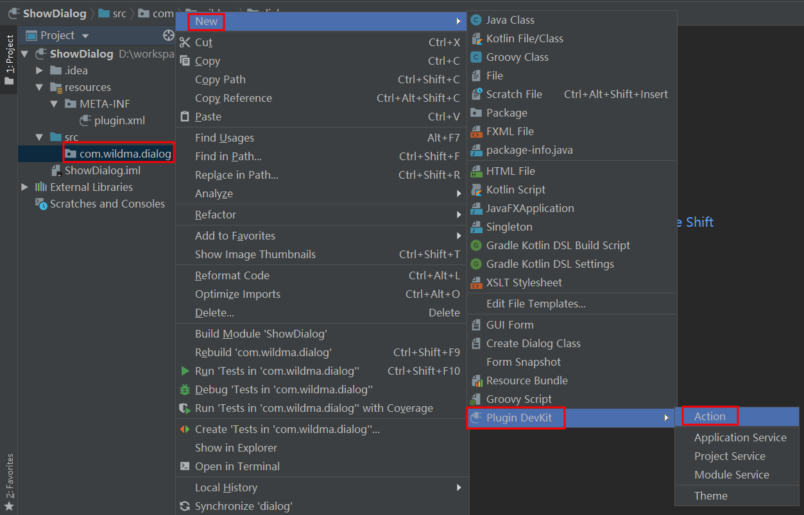
然后填写 Action 相关信息，如下图所示：
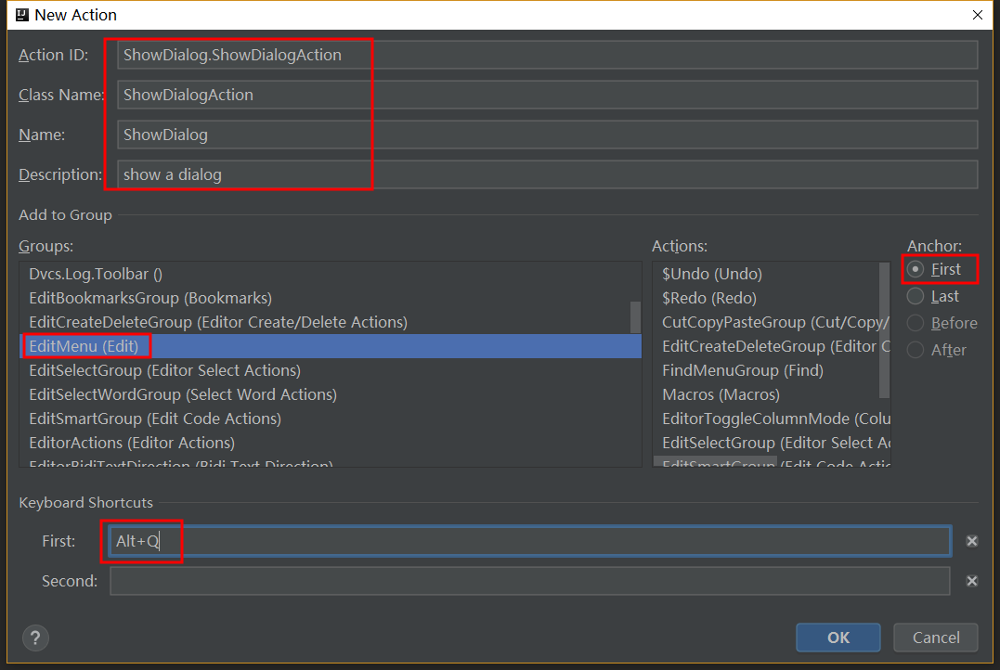
- Action ID: 代表该 Action 的唯一 ID，一般的格式为：pluginName.ID
- Class Name：Action 的类名
- Name：插件在菜单上显示的名字
- Description：这个 Action 的描述
- Groups：指定该插件在 IDE 菜单栏上的位置，如下选择 EditMenu（Edit）表示该插件在 IDE 菜单栏上的 Edit 处
- Anchor：指定插件在 Groups 中的哪个选项，Frist 表示在第一个选项
- Keyboard Shortcuts：使用插件的快捷键
点击 “OK” 后会创建一个刚刚命名的 ShowDialog 类继承 AnAction 并实现 actionPerformed 方法，而且在 plugin.xml 文件中会自动配置我们刚刚填写的 Action 信息。如下图所示：
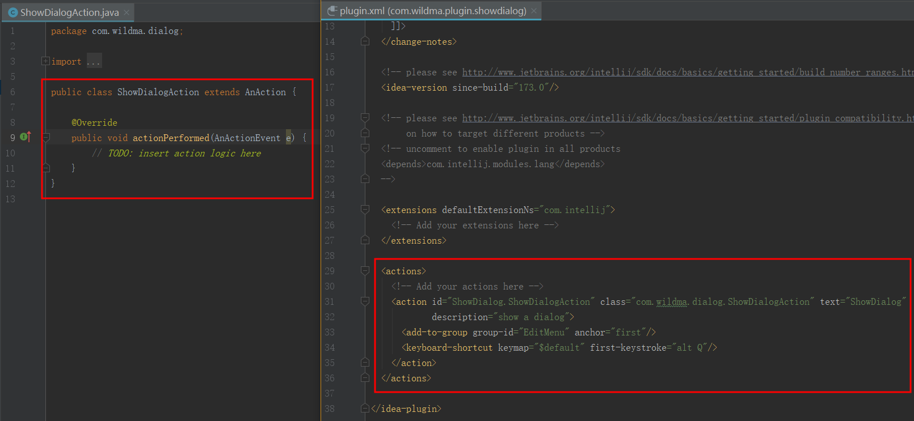
2.3 编写 Action
我们仿照 官方例子，在 actionPerformed 方法中添加如下代码，表示点击插件的时候弹出一个dialog
public class ShowDialogAction extends AnAction {
@Override
public void actionPerformed(AnActionEvent e) {
Project project = e.getData(PlatformDataKeys.PROJECT);
String txt= Messages.showInputDialog(project, "What is your name?", "Input your name", Messages.getQuestionIcon());
Messages.showMessageDialog(project, "Hello, " + txt + "!\n I am glad to see you.", "Information", Messages.getInformationIcon());
}
}2.4 使用插件
Action 代码完成后，点击 Run Plugin 运行项目，会自动启动一个新的 IntelliJ IDEA 项目，在这个项目中就可以使用我们刚刚制作的插件了。如下图所示：
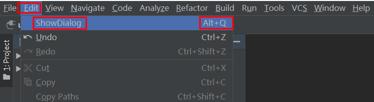
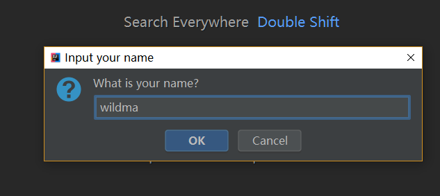
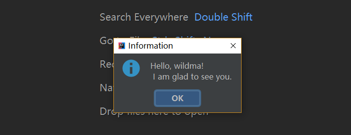
三、生成插件
点击菜单栏上的 Build -> Prepare Plugin Module ‘xxx’ For Deployment 即可，如下图所示：
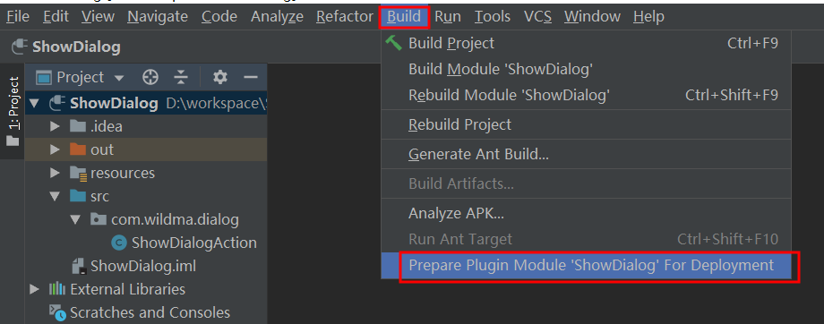
运行完成会在项目的根目录生成一个 xxx.jar 的文件，这个就是最终生成的插件文件，如下图所示：
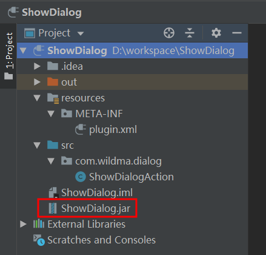
四、安装插件
打开 Andorid Studio，点击菜单栏上的 File -> Settings -> Plugins -> Install plugin from disk，然后选择我们刚刚生成的 jar 文件，如下图所示：
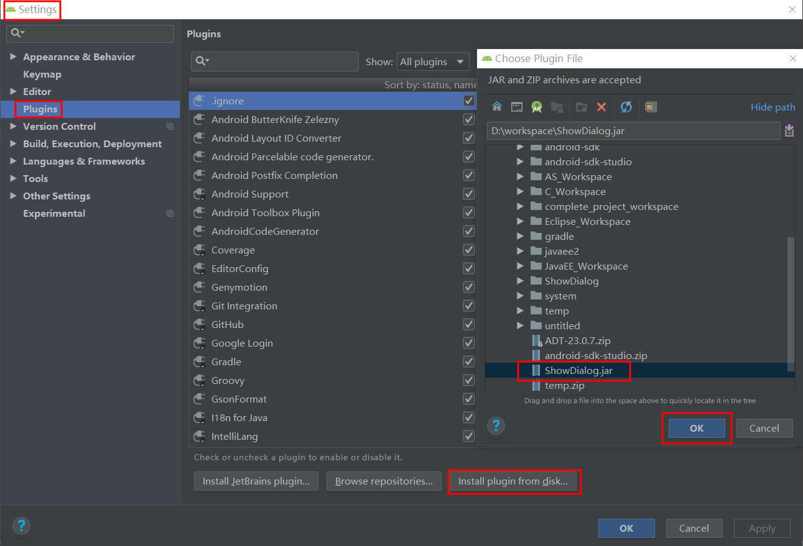
然后点击 “OK”，重启 Andorid Studio 后即可像上面那样使用插件。
五、上传插件
前面生成的插件只能从本地选择安装，要想从插件库直接下载安装则需要将插件上传到插件库-JetBrains Plugins Repository，打开插件库，注册账号（这里可直接使用 Github 账号授权登录），登录后选择 Upload plugin，填写相关信息，点击 Upload 即可上传。如下图所示：
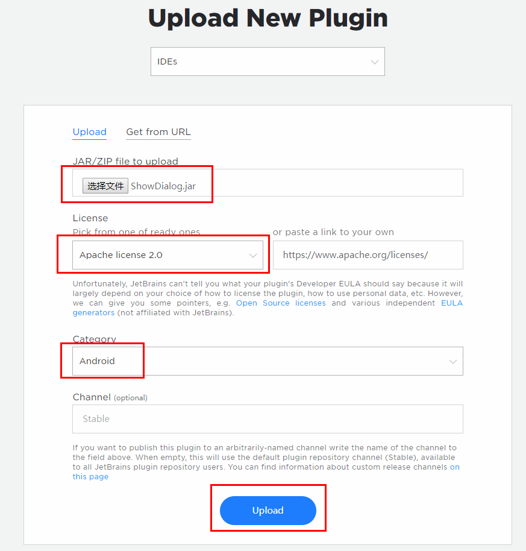
- License：开源许可协议，我这里选择 Apache license 2.0
- Category：插件分类，我这里选择 Android
出现如下界面表示上传成功，但只是上传成功，还需要等审核通过才能在插件库搜索到。
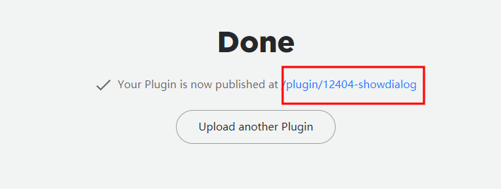
点击上图的链接，跳转到插件详情，点击编辑可完善插件信息。具体如下图所示：
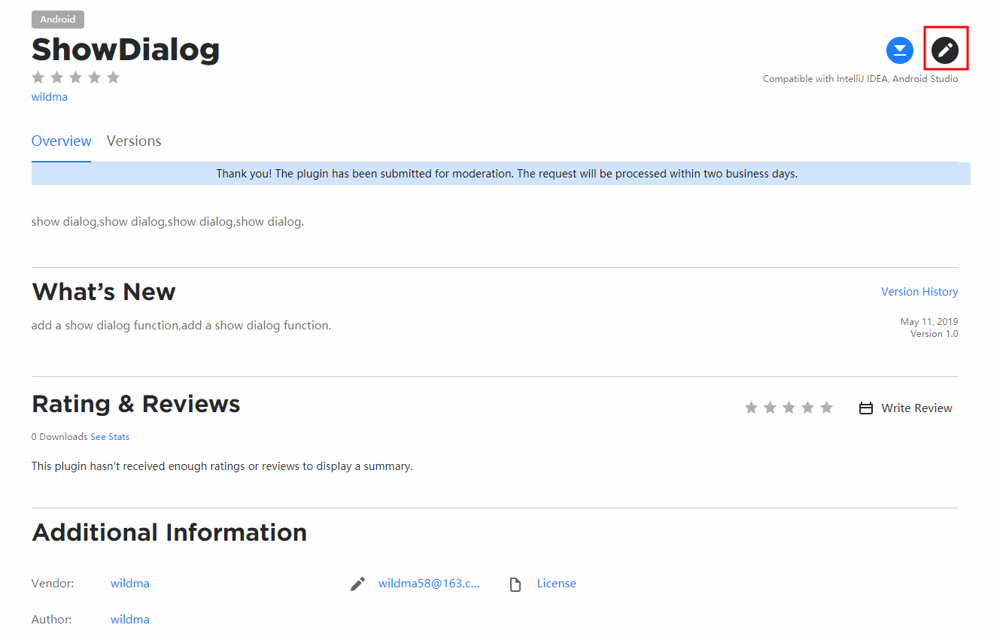
如果在 plugin.xml 文件中没有指定插件是哪些 IDE 可以使用，也可以在这里指定。具体如下：（这种方式我试过审核没有通过，所以我自己用的是在 plugin.xml 文件中指定的方式）
进入编辑界面滑到最底部可以看到 Supported products，即支持的产品。这里默认是 勾选了 “Determine supported products by dependencies in plugin.xml”，表示根据 plugin.xml 文件中的配置项来确定支持的产品。
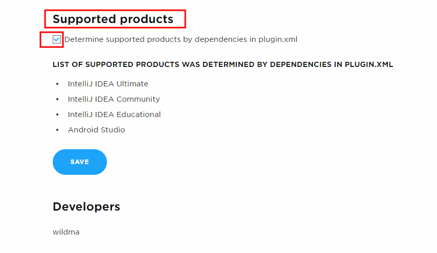
这里我们不使用配置 plugin.xml 文件的方式，而是在这里手动选择。即去掉默认勾选，然后选中 Android Studio，表示插件支持在 Android Studio 中使用，其他 3 项 IntelliJ 是默认勾选的不用管，最后点击保存即可。
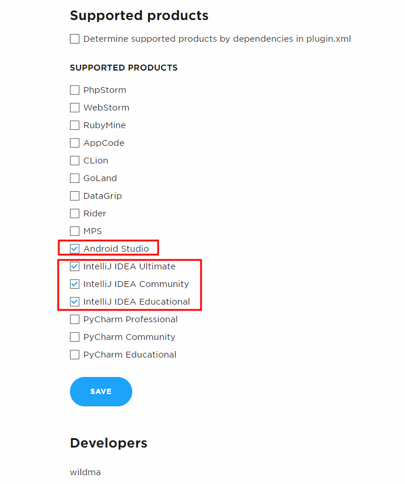
等审核通过后，我们就可以在插件库搜索到啦！如下图所示：
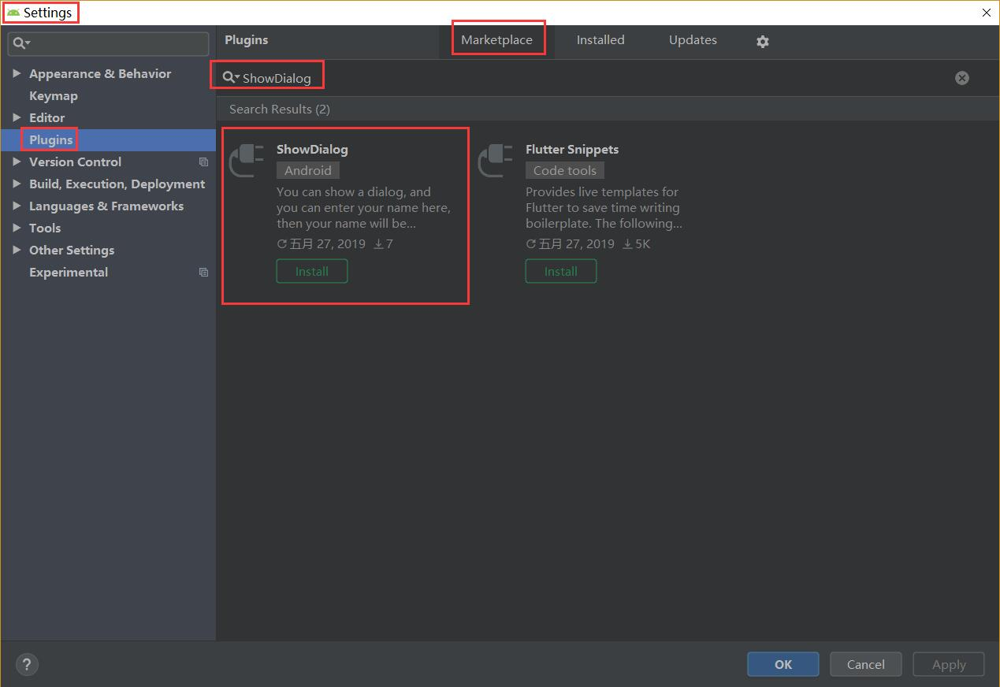
六、注意事项
使用插件出现 NullPointerException
- 问题
写好插件，然后使用 Android Studio 安装插件并使用，提示
java.lang.NullPointerException at com.android.tools.idea.diagnostics.AndroidStudioSystemHealthMonitor.getActionName - 解决
也就是前面 “2. 新建 Action” 那里说的，需要将所有的 Action 及其他 Java 文件都放到包下，而不是直接放在 src 目录下。
在菜单栏上找不到插件
- 问题
写完 Action，然后点击 Run Plugin 运行项目后在菜单栏上找不到插件。 - 解决
在运行项目前需要填写 plugin.xml 文件中的 id 与 name 标签，不能用默认的。
其实这个有点诡异，一般不上传到插件库是可以不填的，但是我用平时常用的电脑反复测试的确是有这个问题，后来换另一部电脑竟然没有这个问题了~，所以我也不知道是因为环境还是什么问题，反正你们遇到就跟我一样解决就可以了。
七、总结
文章看起来好长好复杂呀！嗯，那是因为我是良心博主呀，每一步都给你们写的清清楚楚，还带截图！其实按照我的步骤执行下去，真的挺简单的，也就以下几步：
- 下载开发工具 IntelliJ IDEA 并安装。
- 新建 IntelliJ Platform Plugin 项目，然后编写插件，即新建 Action。
- 生成插件，然后在 Andorid Studio 中安装即可使用。
插件源码：ShowDialog